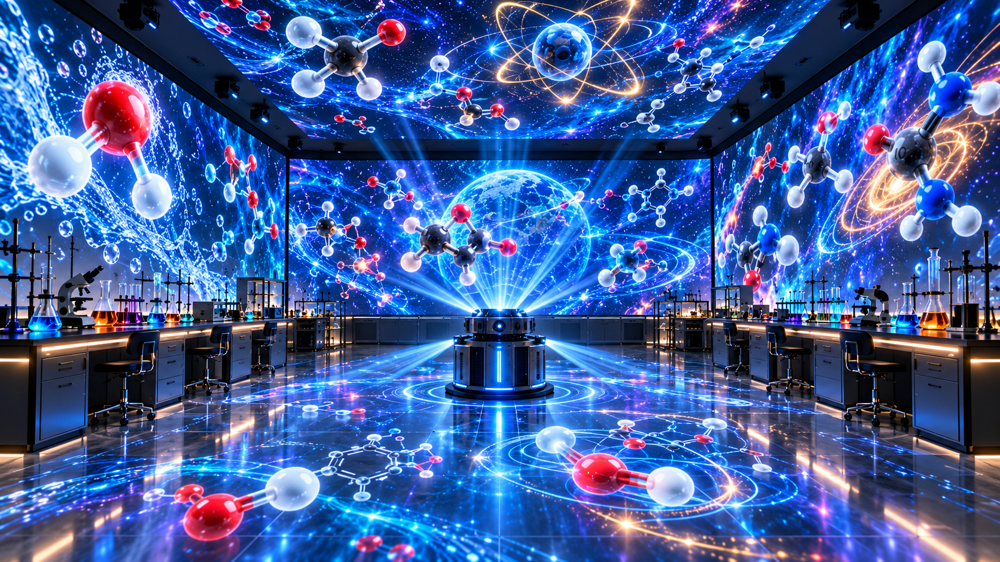

Para verla completa en el celular, gira la pantalla en horizontal.
Falta «laboratorio-fondo.png». Sube también esta imagen a la raíz de GitHub.

ARQUITECTURA MOLECULAR INMERSIVA¿Cómo relacionamos estructura, simetría y polaridad?
Moléculas y rayos superpuestos animados sobre una escena artística. No representan movimiento molecular real ni un proyector físico de 350°.